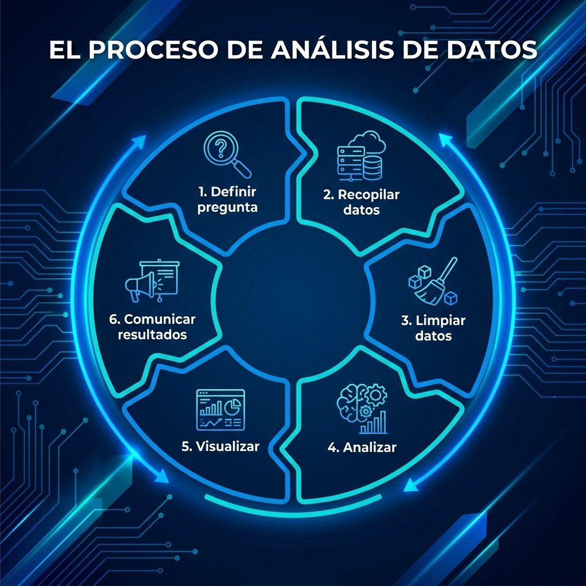

Objetivo-Vision

Visión
Tanto el análisis de datos como la investigación son la base indispensable para la toma de decisiones. El verdadero valor surge al conectar estas disciplinas en una simbiosis con la tecnología de vanguardia, la analítica predictiva y el software especializado. Al unificar las estadísticas con los programas informáticos, se impulsa un enfoque estratégico y una mentalidad de crecimiento adaptable y en continuo desarrollo..
En un entorno tecnológico que se actualiza constantemente, el analista debe mantenerse a la vanguardia de las nuevas herramientas, aplicando siempre el rigor estadístico y el pensamiento estratégico. La investigación evoluciona con nuevas metodologías y las empresas exigen análisis cada vez más sofisticados. Sin embargo, los datos por sí solos no bastan; para generar un valor real, la analítica debe enriquecerse con habilidades clave como la imaginación, el razonamiento lógico, la atención al detalle y un enfoque de trabajo holístico.
Habilidades - Intereses
Los programas de formación que curso actualmente están enfocados en potenciar mis competencias en Análisis de Datos, uniendo herramientas tecnológicas de vanguardia con modelado estadístico. La sinergia de ambos factores es indispensable para comprender a fondo la información, automatizar flujos de trabajo y garantizar el control de los datos. Mi objetivo a corto plazo es dominar el análisis predictivo a través de Machine Learning y optimizar la automatización de procesos. Baso mi metodología en tres pilares fundamentales: el modelado de datos, la definición precisa de la granularidad y el diseño de la visualización. Por ello, el uso de herramientas como Power BI, Excel y Python se orienta rigurosamente al perfil del tomador de decisiones, adaptando el mensaje ya sea para audiencias estadísticas, gerenciales o ejecutivas.